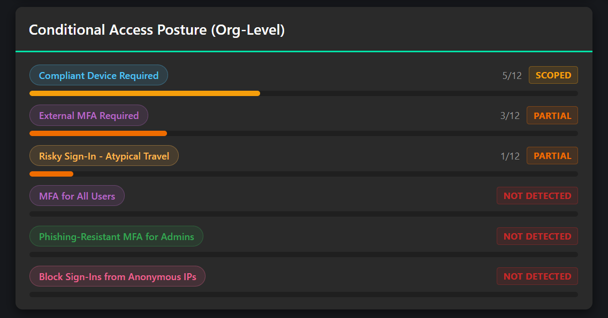
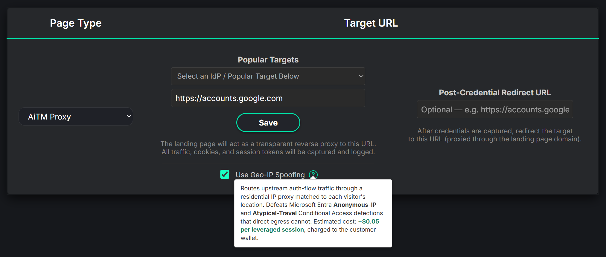

Conditional Access policies keep security leadership up at night for a reason. Is MFA actually enforced everywhere it matters? Did a device rule get scoped too narrowly? Are impossible travel, trusted-device assumptions, OAuth consent governance, and Device Code restrictions really enough when a user gets phished?
All of those controls matter. They also create a dangerous kind of confidence when they are only reviewed on paper.
A policy can exist and still be scoped too narrowly. A risk profile can fire for the wrong traffic and miss the traffic that matters. MFA can protect one path while OAuth Consent Grants or Device Code flows remain exposed. Location rules can catch a datacenter IP while a real attacker comes through a residential connection that looks much closer to the victim.
The uncomfortable question is simple: do your identity controls stop a realistic account compromise path, or do they mostly stop the simulation tools you have been using?
The Gap Security Leaders Have Been Forced to Accept
Traditional phishing simulation platforms usually answer one question: did the user click?
That is not enough for modern identity programs. Security leaders need to know what happened after the click. Did the sign-in succeed? Did MFA trigger? Did the policy block the user? Was the block universal, or did it only apply to admins and executives? Did a device requirement hold? Did a location or risk rule actually matter? Did Microsoft or Google present a challenge that the user could still complete?
For years, there has not been a clean way to test this. Teams configure Conditional Access policies, authentication strengths, device requirements, and risk-based rules, then hope attackers do not find a path around them. Audits can verify that policies exist. Portal reviews can show intended coverage. Neither proves the control holds during a real phishing scenario.
That is the gap the PhishU Framework is built to close.
Phishing Simulation That Doubles as a Conditional Access Audit
The PhishU Framework is not an awareness-only platform. It is a real-world spear-phishing framework built for authorized red teams, pentest firms, MSSPs, and internal security teams. That matters because the product tests the identity path attackers actually care about, not just the employee's first click.
During Adversary-in-the-Middle (AiTM) phishing assessments, the Framework observes the Microsoft and Google authentication flow and classifies what happened. It can record whether the attempt succeeded, was blocked, was challenged, failed due to credentials, or produced an unknown outcome. It also tags the cause when observable: Conditional Access policy, risk-based control, MFA requirement, device requirement, or another gate.
That turns a phishing campaign into a control-validation exercise. The report is no longer just a list of users who clicked. It becomes evidence of which identity controls fired, which users bypassed them, and where the organization may have policy gaps worth reviewing.
A lot of these engagements start the same way. Executive leadership says, "I'm not sure that will work on us, but you can try it." Then the exercise finds a missing control, a policy scoped to the wrong group, or a token-based path nobody had fully locked down.
That should not be treated as a gotcha. It is the exact reason to run the test. The value of the report is that it gives the security team a defensible opportunity to close the gap by hardening controls they already own.

What the Framework Helps Identify
For Microsoft environments, the Framework can map observed Entra authentication outcomes into useful reporting categories. Examples include MFA-required prompts, device-required blocks, Conditional Access blocks, risk-driven challenges, and sign-in outcomes that appear to succeed.
For Google environments, the same idea applies through Google sign-in flow signals. The Framework can identify observed patterns such as security-key challenges, TOTP prompts, device prompts, reCAPTCHA or IP-change challenges, Context-Aware Access denials, and other sign-in interruptions.
The value for security leadership is not the raw signal. It is the translation into an answer they can use:
- Which controls protected users during the campaign?
- Which users reached the protected resource anyway?
- Were blocks universal or targeted to a subset of users?
- Did privileged users receive stronger protection than everyone else?
- Did risk-based controls fire because of the test setup, or because the policy was actually effective?
- Are Device Code and OAuth Consent Grant paths properly restricted?
Geo-IP Spoofing Changes the Test
Many Conditional Access strategies depend on geography, ASN class, impossible travel, unfamiliar sign-in properties, anonymous IP detection, or expected login locations. Those are useful signals, but they are not the same as phishing-resistant controls.
Real attackers know this. They do not always hit Microsoft or Google from an obvious datacenter IP. They can route traffic through infrastructure that looks residential and geographically consistent with the victim.
The PhishU Framework now lets operators test that reality. On an AiTM landing page, Geo-IP Spoofing can be enabled with a simple toggle. When enabled, the authentication traffic can appear from a residential exit aligned to the visitor's geography, rather than from a generic hosting provider or VPN range that would be easy for risk engines to flag.

That is intentionally not a universal bypass. It tests one axis: whether location, travel, and anonymous-IP assumptions are carrying too much of the defensive burden. Device-state controls, phishing-resistant MFA, app-protection requirements, and properly enforced authentication strengths should still matter. If those controls hold, the Framework reports that too.
The Controls That Should Still Hold
This is where the reporting becomes valuable for CISOs.
A good assessment should not only prove what failed. It should also prove what worked. If a compliant-device requirement blocks access, that is a positive finding. If phishing-resistant MFA prevents a session from being usable, that matters. If an admin-only policy protects executives but leaves the broader workforce exposed, that is a scoping decision leadership can review with facts instead of assumptions.
The Framework's goal is not to tell every customer that every policy is broken. The goal is to produce evidence. Some controls will fail under realistic conditions. Some controls will hold. Both outcomes belong in the dashboard and the executive report.
Why Device Code and OAuth Consent Belong in the Same Conversation
Conditional Access testing should not stop at username, password, and MFA.
Modern account compromise often moves through token-based paths. Device Code Phishing can trick a target into authenticating an attacker-controlled device code. OAuth Consent Grant attacks can produce persistent delegated access that may survive password changes and normal credential rotation until a tenant admin revokes the grant.
Security leaders need to know whether those paths are restricted. They also need reporting that explains the difference between a user who clicked a link, a user who entered credentials, a user who completed a device authorization flow, and a user who granted persistent API access.
That is why these techniques belong in the same platform as Conditional Access reporting. The identity-control story is bigger than one login page.
The CISO Takeaway
If your organization relies on Conditional Access, Context-Aware Access, MFA, device trust, impossible travel, and authentication risk profiles, you should be able to test them under realistic conditions.
Not in theory. Not through a policy screenshot. Not through another allow-listed email template that stops at click tracking.
You should be able to run an authorized spear-phishing exercise, simulate real red team techniques, observe how Microsoft or Google actually responds, and receive a report that maps the controls that worked and the gaps that did not.
That is the difference the PhishU Framework brings to security leaders: realistic phishing scenarios, identity-control validation, dashboards, reporting, and training in one workflow.
Security leaders should not have to hope attackers do not get around their policies. They should know which policies hold.
Want to test Conditional Access in a real phishing exercise?
The PhishU Framework helps teams test Microsoft and Google identity controls with realistic phishing scenarios, Geo-IP Spoofing on AiTM landing pages, dashboard analytics, and CISO-ready reporting.
View Conditional Access Testing Contact Us